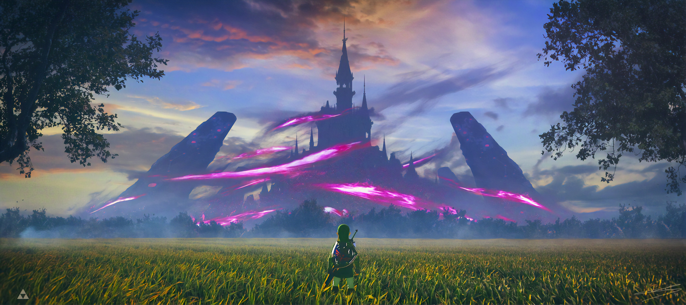
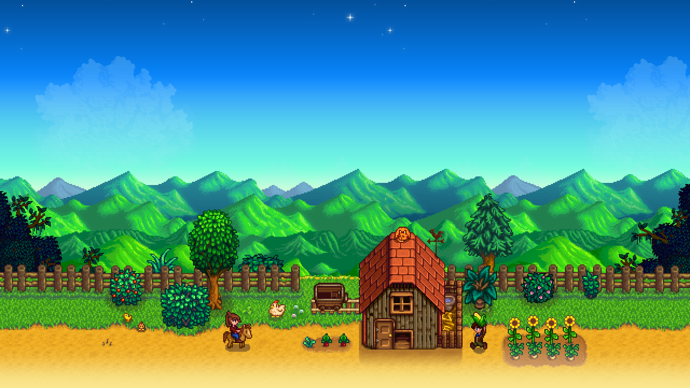

Video Games
This is where I talk about videos games i guess blah blah blah etc etc video games rule i dont even play them that often but whatever
Undertale

The soundtrack for this game was one of the main reasons I decided to play it. The only reason I didn't play it sooner is because it is notoriously difficult...
What makes this game so special is the fact that the story will forever be influenced by anything you had done before in the past, even if you delete your save file, quit the game before it says it has saved, or start a new game.
*SPOILERS*
Many players leave the "Genocide" playthrough for the end, since it can permanently alter the game for the worst. I am currently still on my first playthrough, trying to complete the "True Pacifist" storyline!
The Legend of Zelda: Breath of the Wild

This is one of the most spoken about games for the switch for a very good reason. It's soOoooOo good! I played this game for hours on end trying to defeat monsters, complete quests, and eventually defeat Ganon.
Ni No Kuni
Literally my favorite game from my childhood. I played this game so much when I was younger I became physically ill. There is now a version of it on the Nintendo Switch but I played it on the Playstation when it first came out. I'm almost done with Ni no kuni II, but since I haven't been home I can't continue to play.
Moonlighter
Raid dungeons, kill monsters, sell their loot, rinse + repeat
Stardew Valley

Literally the most wholesome game about farming. I'm almost on Year 3 :0